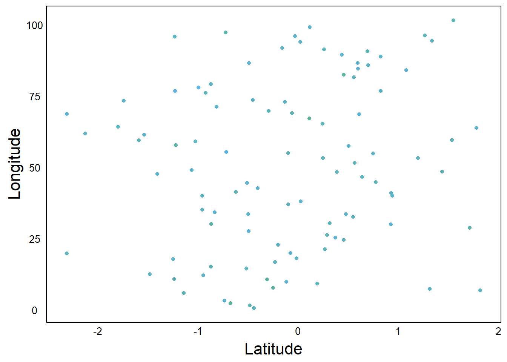

library(ggplot2)
source("http://bit.ly/theme_pub")
theme_set(theme_pub())Advanced Visualizations
Introduction
Before continuing with this tutorial/chapter, you should be familiar with the basics of ggplot from the previous chapters, and you should have lots of practice making graphs with different formatting options.
In this chapter, we look at some important rules of thumb for making professional and effective visualizations. Then, we will work through a detailed example with more advanced options for visualizations with the ggplot function. This includes everything you will need to make professional-grade figures.
The ggplot cheat sheet may be useful for you, both for this chapter and in the future when making your own figures. A cheat sheet is a printable file that provides a good summary and quick-reference guide for a particular function or activity. In this case, the ggplot cheat sheet provides a quick summary of a lot of the main graph types and parameters in the ggplot2 library. It can be found along with other useful cheat sheets on the Posit website: https://posit.co/resources/cheatsheets/
Getting Started
First, we’ll load the ggplot2 library and set a custom plotting theme as described in the previous chapter.
The source function loads an external file, in this case from the internet. The file is just a script saved as .R file with a custom function defining different aspects of the graph (e.g. text size, line width, etc.) You can open the link in a web browser or download and open in a text editor to see the script
The theme_set() function sets our custom theme (theme_pub) as the default plotting theme. Since the theme is a function in R, we need to include the brackets, even though twe don’t want to change anything in the function: theme_pub()
Rules of Thumb
Before we dig into the code, it’s worth reviewing some more general graphical concepts. Standards of practice for published graphs in professional journals can vary depending on format (e.g. print vs online), audience, and historical precedent. Nevertheless, there are a number of useful ‘rules of thumb’ to keep in mind. These are not hard and fast rules but helpful for new researchers who aren’t sure how or where to start. In making decisions, always think of your audience and remember that the main goal is to communicate information as clearly and efficientl as possible.
1. Minimize ‘ink’
In the old days, when most papers were actually printed and mailed to journal subscribers, black ink was expensive and printing in colour was very expensive. Printing is still expensive but of course most research articles are available online where there is no additional cost for colour or extra ink. However, the concept of minimizing ink (or pixels) can go a long way toward keeping a graph free from clutter and unnecessary distraction.
2. Use space wisely
Empty space is not necessarily bad, but ask yourself if it is necessary and what you want the reader to take away. Consider the next two graphs:
Warning: package 'dplyr' was built under R version 4.3.2
Attaching package: 'dplyr'The following objects are masked from 'package:stats':
filter, lagThe following objects are masked from 'package:base':
intersect, setdiff, setequal, unionIn the first example, the Y-axis is scaled to the data. In the second case, Y-axis scaled between 0 and 100.
Question: What are the benefits/drawbacks of scaling the axes? When might you choose to use one over the other?
3. Choose a colour palette
Colour has three basic components:
- Hue – the relative proportion of red vs green vs blue light
- Saturation – how vivid the colour is
- Brightness – the amount of white (vs black) in the colour
The abbreviation HSB is often used, or HSL (L = ‘Lightness’) or HSV (V = ‘Value’).
In R these can be easily defined with the rgb() function. For example:
rgb(1,0,0)– a saturated redrgb(0.1,0,0)– a dark red (low brightness, low saturation)rgb(1,0.9,0.9)– a light red (high brightness, low saturation)
Don’t underestimate the impact of choosing a good colour palette, especially for presentations. Colour theory can get a bit overwhelming but here are a few good websites to help:
- Quickly generate your own palette using Coolors: https://coolors.co
- Use a colour wheel to find complementary colours using Adobe: https://color.adobe.com/create
4. Colours have meaning
Try running this code and veiw the output in colour:
X<-rnorm(100)
Y<-X+seq_along(X)
D<-data.frame(Temperature=Y,Location=X,Temp=Y/3)
qplot(Location, Temperature,colour=Temp, data=D) +
scale_color_gradient(high="blue", low="red")Question: What strikes you as odd about this graph (not shown)?
Technically, there is nothing wrong. But we naturally associate colours with particular feelings. In this case, intuitively we associate red with hot and blue with cold, which is the opposite of what is shown in this graph. Be mindful of these associations when choosing a colour palette.
Another important consideration is that not everyone sees colour the same way. About 5% to 10% of the population has colour blindness. In order to make colour graphs readable to everyone, you should make sure to use colours that can still be interpreted when printed in greyscale, as explained in the Quick Visualizations Chapter.
5. Maximize contrast
Colours that are too similar will be hard to distinguish.

Can you see the gradient of colours? The difference among colours is called contrast, and generally a high-contrast palette is more informative than a low-contrast palette. Here is a plot of the same data, plotted with a wider range of colours:
ggplot(aes(Latitude,Longitude,colour=Precip), data=D) +
geom_point() +
scale_color_gradient(high="cyan", low="red")6. Keep relevant information
Make sure to include proper axis labels (i.e. names) and tick marks (i.e. numbers or categories showing the different values). These labels, along with the figure caption, should act as a stand-alone unit. The reader should be able to understand the figure without having to read through the rest of the paper.
7. Choose the right graph
Often the same data can be presented in different ways but some are easier to interpret than others. Think carefully about the story you want to present and the main ideas you want your reader to get from your figures. Look at these two graphs that show the same data.
ADat<-data.frame(Biomass=rnorm(100), Treatment="Treatment A")
BDat<-data.frame(Biomass=5 + rnorm(100) *5 +
ADat$Biomass * 5, Treatment="Treatment B")
PDat<-rbind(ADat,BDat)
ggplot(aes(Biomass, fill=Treatment), data=PDat)+
geom_histogram(posit="dodge")`stat_bin()` using `bins = 30`. Pick better value with `binwidth`.The first graph tells a story about the distributions – the mean and variance of each treatment
ggplot() + geom_point(aes(ADat$Biomass,BDat$Biomass)) +
xlab("Biomass in Treatment A") + ylab ("Biomass in Treatment B")The second graph tells a story about the correlated relationship between Treatment A and Treatment B.
One graph is not necessarily better than the other. It depends on the story you want to tell.
Example
Now that we have gone over some basic graphing concepts, let’s look at how to build a professional-grade figure. In fact, we’ll reconstruct a figure published in a paper by Colautti & Lau in the journal Molecular Ecology (2015): https://doi.org/10.1111/mec.13162
Setup
The paper is a meta-analysis and review of evolution occurring during biological invasions. We will recreate Figure 2, which shows the result of a meta-analysis of selection gradients (\(\beta\)) and selection differentials (\(s\)). First, we’ll just recreate the top panel, and then we’ll look at ways to make more advanced multi-panel graphs like this.
The data from the paper are archived on Dryad: https://datadryad.org/stash/dataset/doi:10.5061/dryad.gt678
You could download the zip file and look for the file called Selection_Data.csv and save it to your working directory. But I have also put it on Github, so that you can download it directly to R:
SelData<-read.csv(
"https://colauttilab.github.io/RCrashCourse/Selection_Data.csv")We are also going to change the column names in the file to make them a bit more intuitive and easier to work with in R.
names(SelData)<-c("Collector", "Author", "Year", "Journal",
"Vol", "Species", "Native", "N",
"Fitness.measure", "Trait", "s",
"s.SE", "s.P", "B", "B.SE", "B.P")Inspect
Let’s take a quick look at the data
head(SelData) Collector Author Year Journal
1 KingsolverDiamond Alatalo and Lundberg 1986 Evolution
2 KingsolverDiamond Alatalo and Lundberg 1986 Evolution
3 KingsolverDiamond Alatalo and Lundberg 1986 Evolution
4 KingsolverDiamond Alatalo et al. 1990 American Naturalist
5 KingsolverDiamond Alatalo et al. 1990 American Naturalist
6 KingsolverDiamond Alatalo et al. 1990 American Naturalist
Vol Species Native N Fitness.measure
1 40:574-583 Ficedula hypoleuca yes 641 male mating success
2 40:574-583 Ficedula hypoleuca yes 713 female mating success
3 40:574-583 Ficedula hypoleuca yes 1705 survival
4 135(3):464-471 Ficedula albicollis yes <NA> survival
5 135(3):464-471 Ficedula albicollis yes <NA> survival
6 135(3):464-471 Ficedula albicollis yes <NA> survival
Trait s s.SE s.P B B.SE B.P
1 tarsus length -0.01 ns NA
2 tarsus length 0.01 sig NA
3 tarsus length 0.04 ns NA
4 tarus length 0.02 ns -0.06
5 tarus length 0.08 ns -0.01
6 tarus length 0.19 sig 0.01 It’s worth taking some time to look at this to understand how to encode data for a meta-analysis. The collector column indicates the paper that the data came from. The Author indicates the author(s) of the original paper that reported the data. The Year, Journal, and Vol give information about the publication that the data came from originally.
We can see above the collector KingsolverDiamond, which represents a paper from Kingsolver and Diamond that was itself a meta-analysis of natural selection. Most of the studies came from this meta-analysis, but a few of the more recent papers were added by grad students, denoted by initials:
unique(SelData$Collector)[1] "KingsolverDiamond" "JAL" "DJW"
[4] "CPT" Species is the study species, and Native is its status as a binary yes/no variable. N is the sample size and Fitness.measure is the specific trait that defines fitness. Trait is the trait on which selection was measured. Finally, \(s\) is the selection differential and \(\beta\) is the selection gradient. Note that these are slopes in units of relative fitness per trait standard deviation. This is explained in more detail below.
Absolute Value
In this analysis, we are interested in the magnitude but not the direction of natural selection. In other words we would want to treat a slope of -4 the same as a slope of +4 because they have the same magnitude. Therefore, we can replace the \(s\) column with \(|s|\)
SelData$s<-abs(SelData$s)We’ll also add a couple of columns with random variables that we can use later to explore additional plotting options.
First, a column of values sampled from a z-distribution – this is a Gaussian (a.k.a. ‘normal’) distribution with mean = 0 and sd = 1.
SelData$Rpoint<-rnorm(nrow(SelData))Second, a columnn of 1 and 0 sampled randomly with equal frequency (\(p = 0.5\))
SelData$Rgroup<-sample(c(0,1), nrow(SelData), replace=T)Question: Do you remember
rnorm()andsample()from the R Fundamentals Chapter?
If not, it may be a good time for a quick review. Remember to keep practicing – recognizing code is not the same as being able to write it from scratch.
Missing Values
Before we plot the selection data, we should take a quick look at the values to check for potential errors.
print(SelData$s)The output isn’t shown here, but note that NA is used to denote missing data in the output.
We can subset to remove missing data:
SelData<-SelData[!is.na(SelData$s),]Recall from the R Fundamentals Chapter that ! means ‘not’ or ‘invert’
There is also a convenient drop_na function in the tidyr package:
library(tidyr)
SelData<-SelData %>%
drop_na(s)Measuring Selection
Don’t Panic!
We’re going to get a bit technical here. Don’t worry if you don’t completely understand all of the stuff below about measuring selection. Keep it for reference in case you decide you want to use it for your own research. For now, just try to understand it as well as you can and focus on the code used to produce the figures.
An analysis of phenotypic selection was proposed by Lande & Arnold (1983) as a simple but powerful tool for measuring natural selection. It is just a linear model with relative fitness on the y-axis and the standardized trait value(s) on the x-axis.
Relative Fitness
Fitness can be measured in many ways, such as survival or lifetime seed or egg production. Check out the list of specific fitness measures used in these studies:
unique(SelData$Fitness.measure)(output not shown)
Absolute fitness is just the observed value (e.g. seed set or survival yes/no). Technicallly, we call these fitness components because they are not fitness per se, but they represent measurements of survival and reproduction, which are the key components that jointly determine fitness.
Relative fitness is just the absolute fitness divided by the mean. Absolute fitness is usually denoted by the capital letter \(W\) and relative fitness is usually represented by a lower-case \(w\) or omega \(\omega\). Expressing this in mathematical terms:
\[ \omega = W_i/\bar W \]
where \(W_i\) is the mean of the study sample.
Trait Value
A Trait Value is just the measured trait on which selection may act. Use unique(SelData$Trait) to see the list of specific traits that were measured in these studies. The Standardized Trait Value is the traits z-score. See the Distributions Chapter in the book R STATS Crash Course for more information about z-scores. To calculate the z-score, we take each value, subtract the mean, and then divide by the standard deviation of the sample (\(sd\)):
\[\frac{x_i-\bar X}{sd}\]
Since traits have different metrics, they are hard to compare: e.g. days to flower, egg biomass, foraging intensity, aggression. But standardizing traits to z-scores puts them all on the same scale for comparison. Specifically, the scale of selection will be in standard deviations from the mean.
\(s\) vs \(\beta\)
Selection differentials (\(s\)) and selection gradients (\(\beta\)) measure selection using linear models but represent slightly different measurements. Linear models are covered in the Linear Models Chapter in the book R STATS Crash Course.
Both models use relative fitness (\(\omega\)) as the response variable.
Selection differentials (\(s\)) measure selection on only a single trait, ignoring all other traits. In theory, the response to selection is a simple function of the genetic correlation between a trait and fitness.
Fitness differences among individuals can depend on a lot of things – genetic variation for the trait itself, but also environmental effects on the trait as well as effects on other traits that are under selection and correlated with the trait of interest.
Selection gradients (\(\beta\)) measure selection on a trait of interest while also accounting for selection on other correlated traits. This is done via a multiple regression – a linear model with multiple predictors.
Now that we have reviewed the relevant biological background, we can plot \(s\) and \(\beta\) to compare their distributions.
Distribution Plots
Let’s start with a simple ggplot function. We are going to be adding layers to build up to more complex graphs, so we’ll start by creating a base plotting object to build on.
BarPlot<-ggplot(aes(x=s, fill=Native), data=SelData)aes()
Recall from the Basic Visualizations Chapter, the use of aesthetic function aes(). This defines the data that we want to use for our ggplot graph. We will see how we do this by adding layers to our plot, similar to the way old-timey cartoons were made by layering multiple clear pages of cellophane with characters painted on them. The aes function inside of the ggplot function defines that data that will be shared among all of the layers. In addition, we can have separate aes functions inside different geom_ layers that define and restrict the plotting data to that specific layer.
Let’s look at the ggplot object so far:
print(BarPlot)No data!
Question: Why are there no data plotted?
Answer: We didn’t define a geom_ for the data yet.
Layers
So far, we have only loaded in the data for plotting. We have to specify which geom(s) we want. We’ll start with a bar plot:
BarPlot<- BarPlot + geom_bar()
BarPlotLet’s explore the components of our Bar Plot object.
summary(BarPlot)data: Collector, Author, Year, Journal, Vol, Species, Native, N,
Fitness.measure, Trait, s, s.SE, s.P, B, B.SE, B.P, Rpoint, Rgroup
[2766x18]
mapping: x = ~s, fill = ~Native
faceting: <ggproto object: Class FacetNull, Facet, gg>
compute_layout: function
draw_back: function
draw_front: function
draw_labels: function
draw_panels: function
finish_data: function
init_scales: function
map_data: function
params: list
setup_data: function
setup_params: function
shrink: TRUE
train_scales: function
vars: function
super: <ggproto object: Class FacetNull, Facet, gg>
-----------------------------------
geom_bar: just = 0.5, width = NULL, na.rm = FALSE, orientation = NA
stat_count: width = NULL, na.rm = FALSE, orientation = NA
position_stack It’s worth taking some time to understand the structure of this ggplot object how it relates to what gets plotted to the output.
- Data shows which data are available for plotting. These are just the column names of the
data.frameobject we input with thedata=parameter in theggplot()function. - Mapping shows the variables from the
aes()function, the scaling of the x-axis and the variable for thefill=colours. - Faceting contains information for multiple plots. We’ll explore this more later, but a single graph has a
facet_null()function. - Dashed line separates the
ggplot()function from the other functions linked with the plus (+) in our plotting function. In our graph, there was+ geom_bar(), which we can see below the dashed line. - geom_bar shows the (default) parameters used in our function
- stat_count shows our
statfunction. This was created by default with our+ geom_bar()function; it determines how the data are transformed to geometric shapes for plotting (e.g., points, lines, or bars).
The output also shows some of the functions and parameters used to generate the graph. At the bottom we see parameters for geom_bar and stat_count. Note that there are more parameters listed than what we explicitly put into the ggplot() function. These extra parameters are the default parameters for the function.
geom_ and stat_
If geoms is the geometry of the shapes in the plot, then stats is the statistic or mathematical functions that create the geoms. In the above case, the vertical bars in geom_bar are created by counting the number of observations in each bin. The stat_count function is responsible for this calculation, and it is called by default when we use the geom_bar function. Specifically, stat_count counts the number of observations in each histogram bin.
More generally, we can change the geometry of the plotted shapes with geom_<NAME>, and we can define different functions for generating the geometric shapes with stat_<NAME>. To make things easier on us, there is a default stat for each geom. In most cases we can just focus on which geometry we want for our graph, and use the default stat.
For more information on the default parameters and stat of geom_bar() or any other geom, use the R help function.
?geom_barBivariate geom
Let’s explore a few more plotting options to get a better feel for our plotting parameters. Use summary() on each graph and compare it to the summary() output we examined earlier. Here we’ll use the random normal values we generated above so that we can make a bivariate plot:
BivPlot<-ggplot(data=SelData, aes(x=s, y=Rpoint)) +
geom_point()First, take a quick look at the summary() of the plotting function and compare to the earlier graph (data not shown).
summary(BivPlot)Now plot the graph:
print(BivPlot)Notice how the points are all clustered to the left. This looks like a classic log-normal variable, so let’s log-transform \(s\) (x-axis)
BivPlot<-ggplot(aes(x=log(s+1), y=Rpoint), data=SelData) +
geom_point()
print(BivPlot)Once again, compare the summary with the untransformed x-axis.
Question: What does the
summary()show as the difference for a raw vs log-tranformed x-axis in theaes()function inside ofggplot()
geom_smooth()
A really handy feature of ggplot is the geom_smooth function, which has several options for calculating and plotting a statistical model to the observations.
Here’s a simple linear regression slope (lm = linear model):
BivPlot +
geom_smooth(method="lm", colour="steelblue",
formula = y~x, linewidth=2)We can use a grouping variable to add separate regression lines for each group.
BivPlot +
geom_smooth(aes(colour=Native),linewidth=2,
method="lm", formula=y~x)Full ggplot
Now that we have a better understanding of ggplot(), let’s try to recreate the selection histograms in Figure 2 of Colautti & Lau (2015). This will involve three main steps:
- Separate data for native vs. introduced species into two data sets for custom plotting.
- Use a bootstrap model to estimate non-parametric mean and 95% confidence intervals for each group.
- Plot all of the components on a single graph
One technical note. We are going to deviate from the published code slightly. The published figure uses frequency data, whereas we are going to use density data.
Separate Data
Since this is a relatively simple resampling model, we’ll use two separate vectors to store data for our plots and boostrap sampling: one for native and one for non-native.
NatSVals<-SelData$s[SelData$Native=="yes"]
IntSVals<-SelData$s[SelData$Native=="no"] An alternative would be to set up a data frame and keep track of values as separate columns, with a different row for each iteration.
Bootstrap
The graph includes a bootstrap model to estimate the mean and variance for each group (native = "yes" vs "no"). A bootstrap is just a computational approach to generating confidence limits on the sample. It makes no assumptions about the underlying distribution of the population from which the sample is drawn, so it is a robust method for non-parametric data. In our case, we will randomly sample from each vector, and calculate the mean. We repeat this many times to get a range of values from which we can estimate the confidence interval.
The example below is not the most efficient approach but it is a good opportunity to practice our for(){} loops from the Flow Control section in the R Fundamentals Chapter.
Data Setup
First we define the number of iterations and set up two objects to hold the data from our bootstrap iterations.
IterN<-100 # Number of iterations
NatSims<-{} # Dummy objects to hold output
IntSims<-{}for(){} Loop
We will use the for loop to resample the data, calcuate the sample mean, and repeat N times. This involves just three key steps.
- Sample, with replacement.
- Calculate the average.
- Save the average in a vector:
NatSimsfor native species orIntSimsfor non-native species.
for (i in 1:IterN){
NatSims[i]<-mean(sample(
NatSVals, length(NatSVals), replace=T))
IntSims[i]<-mean(sample(
IntSVals, length(IntSVals), replace=T))
}Note in the above code we use ‘nested’ functions. The sample() function is nested inside the the mean() function, which is faster than using nested loop.
Also note that we can include both datasets (native + non-native) in the same for loop.
95% CI
Non-parametric Confidence Intervals (CI) are calculated directly from the bootstrap output. Let’s try finding our 95% CI range, which goes from the lower 2.5% to the upper 97.5% of values.
First, sort the datea from low to high
NatSims<-sort(NatSims)
IntSims<-sort(IntSims)Each of the output vectors contains a number of values equal to our Iter variable, as defined earlier in our code. Now we identify the lower 2.5% and upper 97.5% values in each vector. For example, with 1000 iterations our 2.5% would be the 25th value in the sorted vector and the upper 97.5% would be the 975th value in the sorted vector.
We use this number to index the vector with square brackets. We make sure to round to a whole number since we can’t have a fractional cell position.
CIs<-c(NatSims[round(IterN*0.025,0)], # Lower 2.5%
NatSims[round(IterN*0.975,0)], # Upper 97.5%
IntSims[round(IterN*0.025,0)], # Lower 2.5%
IntSims[round(IterN*0.975,0)]) # Upper 97.5%The output (CIs) as is therefore a vector of four elements.
print(CIs)[1] 0.1820612 0.1998140 0.2259135 0.3058595Note: your numbers should be similar but won’t be exact because you won’t have the exact same random sample when you run your code.
Question: What line of code could we add above to ensure that these numbers were exactly the same for everyone who ran this code?
Answer: If you aren’t sure, then it’s a good time to review the R Fundamentals Chapter.
Plot Data
We’ll set up a new data frame object for plotting data, to make it easier to write our plotting functions.
HistData<-data.frame(s=SelData$s,Native=SelData$Native)and set up a minimal ggplot code:
p <- ggplot()Now we can add layers to the plot. We’ll print out each layer as we go, so that we can see what each layer adds to the overall graph. The coding is a bit complex here, so don’t worry if it’s hard to follow everything. The key thing to understand is how the different geoms contribute to the final plot.
p <- p + geom_density(aes(x=s),
data=HistData[HistData$Native=="yes",],
colour="#1fcebd66", size=2)Warning: Using `size` aesthetic for lines was deprecated in ggplot2 3.4.0.
ℹ Please use `linewidth` instead.print(p)Here, we’ve added a geom_density geometry, which gives a smoothed line, like we saw in the Quick Visualizations Chapter. This works well for large datasets with many bins. For example, compare this graph with the geom_box() graph that we did on this data earlier in this chapter.
Note that the y-axis goes above 1 because the total probability is the area under the curve, which must equal one. Since there are many values that are less than one, the density must have values larger than 1 in order for the area to equal 1.
Next, we can add a similar graph for the non-native species, with a contrasting colour.
p <- p + geom_density(aes(x=s),
data=HistData[HistData$Native=="no",],
colour="#f5375166", size=2)
print(p)Alternatively, we could use a single geom with group= and colour=. However, using separate geom layers makes it easier to specify colours. This is yet another example of how different programming approaches can yield the same output, and one approach is not necessarily superior to the other.
Next, we add our CI data. CI is a range of values for each group, which we can represent as a rectangle.
p <- p + geom_rect(aes(xmin=CIs[1],xmax=CIs[2],ymin=0,ymax=0.25),
fill="#1fcebd88")
print(p) # native species 95% CI barWith geom_rect we define 4 points of the rectangle. The x-axes coordinates are the CI values from our bootstrap algorithm, and the y-axes values are arbitrary numbers that determine the height of the rectangle.
Now try the same thing for the non-native species.
p <- p + geom_rect(aes(xmin=CIs[3],xmax=CIs[4],ymin=0,ymax=0.25),
fill="#f5375188")
print(p) # introduced species 95% CI barNow we add the bootstrap mean for each group. The bootstrap mean is just the mean of the bootstrap iterations – that is, a mean of means.
p <- p + geom_line(aes(x=mean(NatSims),y=c(0,0.25)),
colour="#1d76bf",size=1)
p <- p + geom_line(aes(x=mean(IntSims),y=c(0,0.25)),
colour="#f53751",size=1)
print(p)Finally, we tweak the axis titles and zoom in along the x-axis to make it easier to see the differences between the two distributions. Note how the y-axis label changed when we added geom_line.
p <- p + ylab("Density") +
scale_x_continuous(limits = c(0, 1.5))
print(p) # labels added, truncated x-axisWarning: Removed 12 rows containing non-finite values (`stat_density()`).Warning: Removed 1 rows containing non-finite values (`stat_density()`).Note the warnings about missing data, which seems to be due to the fact that we zoomed in on the x-axis. Despite the warnings, everything looks okay if we compare this graph to the previous one.
There we have it! We succesffuly created a complex plot overlapping layers by breaking down ggplot() into individual components.